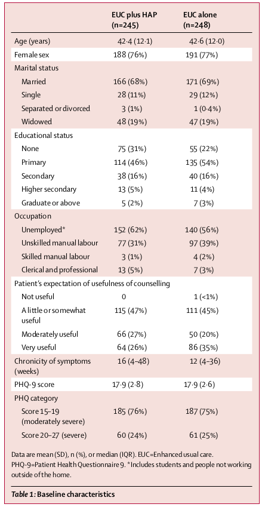

|

../../cm-ucl/corpus-oa-pmr-v02/10.1016_S0140-6736(16)31589-6/tables/table1/table.png
|
| _{Femalesex} _{Maritalstatus} _{Married} _{Single} ^{Separatedordivorced} Widowed Educationalstatus ^{None} ^{Primary} ^{Secondary} ^{Highersecondary} ^{Graduateorabove} ^{Occupation} Unemployed* Unskilledmanuallabour ^{Skilledmanuallabour} ^{Clericalandprofessional} ^{Patient’sexpectationofusefulnessofcounselling} _{Notuseful} _{0} _{Alittleorsomewhat} _{115(47%)} ^{useful} ^{Moderatelyuseful} ^{66(27%)} ^{Veryuseful} ^{64(26%)} ^{Chronicityofsymptoms} ^{16(4–48)} ^{(weeks)} ^{PHQ-9score} ^{17·9(2·8)} ^{PHQcategory} _{(moderatelysevere)^{Score15–19}} ^{185(76%)} _{Score20–27(severe)} _{60(24%)} _{Dataaremean(SD),n(%),ormedian(IQR).EUC=Enhancedusualcare.} _{outsideofthehome.^{PHQ-9=PatientHealthQuestionnaire9.*Includesstudentsandpeoplenotworking}} _{Table1:Baselinecharacteristics} |
_{188(76%)} _{166(68%)} _{28(11%)} ^{3(1%)} 48(19%) ^{75(31%)} ^{114(46%)} ^{38(16%)} ^{13(5%)} ^{5(2%)} 152(62%) 77(31%) ^{3(1%)} ^{13(5%)} |
_{191(77%)} _{171(69%)} _{29(12%)} ^{1(0·4%)} 47(19%) ^{55(22%)} ^{135(54%)} ^{40(16%)} ^{11(4%)} ^{7(3%)} 140(56%) 97(39%) ^{4(2%)} ^{7(3%)} _{1(<1%)} _{111(45%)} ^{50(20%)} ^{86(35%)} ^{12(4–36)} ^{17·9(2·6)} ^{187(75%)} _{61(25%)} |
../../cm-ucl/corpus-oa-pmr-v02/10.1016_S0140-6736(16)31589-6/tables/table1/table.svg.html
|

../../cm-ucl/corpus-oa-pmr-v02/10.1016_S0140-6736(16)31589-6/tables/table2/table.png
|
| _{BDI-IIscoreat3months} _{Depressionremissionat3months} ^{Secondaryoutcomes} ^{Disabilityscore} ^{Daysunabletowork} _{Behaviouralactivationscore} _{Suicidalthoughtsorattempts‡} _{Intimatepartnerphysical} ^{violence(women)§} ^{Intimatepartnerpsychological} ^{oremotionalviolence(women)§} _{violence(men)§^{Intimatepartnerphysical}} _{Intimatepartnerpsychological} _{oremotionalviolence(men)§} _{Inventory.*Amongthosewithobserveddataat3months.†Includingimputedoutcomedataforthosewithmissing^{Dataaremean(SD)orn/N(%).EUC=enhancedusualcare.HAP=HealthyActivityProgram.BDI=BeckDepression}} _{data.‡Weassessedsuicidalthoughtsoverthepast2weeksthroughtherelevantPatientHealthQuestionnaire9item,} _{whereasweassessedsuicideattemptsoverthe3monthperiodsinceenrolment.Sevenparticipantsreportedsuicide} ^{attempts(threeintheEUCgroupandfourintheEUCplusHAPgroup).Alloftheseparticipantsalsoreportedsuicidal} _{Fisher’sexacttestoncompletecasedata.^{thoughts.§Amongmarriedparticipants.¶Becauseofsparsedata,thepvalueforphysicalviolenceinmenisusing}} |
19·99(15·70) 147/230(64%) 9·12(9·34) 4·97(7·71) 12·05(4·76) 48/230(21%) 13/112(12%) 33/112(29%) 0/37 6/37(16%) |
27·52(13·26) 91/236(39%) 11·79(8·99) 7·21(9·38) 9·88(4·36) 82/236(35%) 26/120(22%) 44/120(37%) 3/40(8%) 8/40(20%) |
–7·57 _{(–10·27to–4·86)} 1·61 ^{(1·34to1·93)} –2·73 ^{(–4·39to–1·06)} _{(–3·84to–0·73)–2·29} 2·17 _{(1·34to3·00)} 0·61 _{(0·45to0·83)} 0·53 (0·29to0·96) 0·76 (0·53to1·10) 0·00 0·67 (0·27to1·71) |
<0·0001 <0·0001 0·001 0·004 <0·0001 0·001 0·04 0·15 0·24¶ 0·41 |
| ^{Table2:Primaryandsecondaryoutcomes} |
../../cm-ucl/corpus-oa-pmr-v02/10.1016_S0140-6736(16)31589-6/tables/table2/table.svg.html
|

../../cm-ucl/corpus-oa-pmr-v02/10.1016_S0140-6736(16)31589-6/tables/table3/table.png
|
| ^{Healthsystemcosts($)} ^{PHCdoctorconsultations} _{Hospitaldoctorconsultations} _{Hospitaladmissions} _{Laboratorytests} _{Medicines} _{Totalpublichealth-carecosts} _{HAPintervention} _{Productivitycosts($)} _{Timecoststoserviceusers} ^{andfamilies} ^{Productivitylosses} _{Totalcosts($)} _{Healthsystemperspective} _{Societalperspective} _{Cost-effectivenessanalyses} QALYsgained _{Dataaremean(SD).EUC=enhancedusualcare.HAP=HealthyActivityProgram.PHC=publichealthcentre.} _{QALY=quality-adjustedlife-year.} _{Table3:CostsperpersonandQALYsgained(2015internationaldollars)} |
^{$13(21)} _{$13(73)} _{$8(62)} _{$6(20)} _{$6(15)} _{$47(117)} _{$66(55)} _{$52(62)} ^{$87(116)} _{$113(125)} _{$251(229)} 0·209 ^{(0·018)} |
^{$15(23)} _{$13(51)} _{$22(100)} _{$9(36)} _{$9(25)} _{$67(132)} _{$0} _{$40(55)} ^{$139(141)} _{$67(132)} _{$246(244)} 0·204 ^{(0·018)} |
^{–$2(–6to2)} _{$0(–11to11)} _{–$14(–28to2)} _{–$3(–8to2)} _{–$3(7to1)} _{–$20(–40to4)} _{$66(59to73)} _{$12(1to22)} ^{–$52(–75to–29)} _{$46(22to68)} _{$5(–37to47)} 0·005 ^{(0·002to0·008)} |
^{0·40} _{0·98} _{0·08} _{0·24} _{0·08} _{0·07} _{<0·0001} _{0·03} ^{<0·0001} _{<0·0001} _{0·83} 0·008 |
../../cm-ucl/corpus-oa-pmr-v02/10.1016_S0140-6736(16)31589-6/tables/table3/table.svg.html
|

../../cm-ucl/corpus-oa-pmr-v02/10.1016_S0140-6736(16)31589-6/tables/table4/table.png
|
| _{at3months($)} _{Costperremission} _{at3months($)} _{CostperBDIpoint} ^{improvementat3months($)} _{Dataaremean(95%CI).BDI=BeckDepressionInventory.} |
(3862to28169) $181 (87to335) $6 (3to12) |
(–6145to14418) $19 (–133to229) $1 (–5to8) |
| ^{Table4:Cost-effectivenessanalysesfromhealthsystemandsocietal} |
|
| ^{perspectives(2015internationaldollars)} |
|
| ^{} |
|
| ^{} |
|
|
_{} |
| ^{} |
|
| ^{} |
|
| ^{} |
|
| _{} |
|
| ^{} |
|
../../cm-ucl/corpus-oa-pmr-v02/10.1016_S0140-6736(16)31589-6/tables/table4/table.svg.html
|